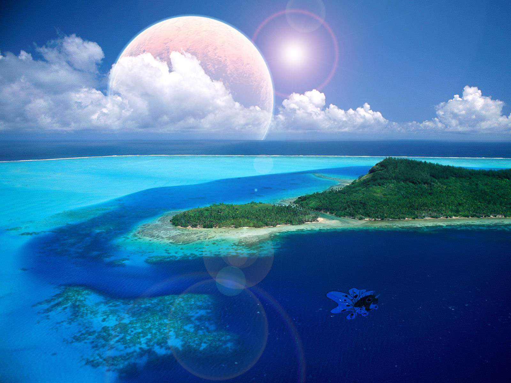
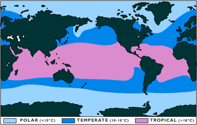

Tropical Oceans
Location
Introduction
The
water temperature of tropical oceans thus typically exceeds 20°C (68°F) and stays relatively constant throughout the year. Particularly intense radiation directly over the equator evaporates seawater and forms a mass of very warm, humid tropical air that subsequently rises and cools as it flows north and south. Because cool air holds less moisture than warm air, the water vapor quickly condenses into clouds and falls as precipitation. Heavy, warm, year round rains are a hallmark of Earth's tropical regions. Fragile, biologically diverse ecosystems such as rainforests and coral reefs thrive in the warm, wet tropics.White sand, palm trees, and warm, shallow water comprise the classic image of a tropical beach. The brilliant turquoise hue of clear tropical waters is largely the result of the selective scattering and absorption of visible light.

The
cool, oxygen-rich and nutrient-rich deep water supports abundant marine life. Coral reefs are another well-recognized feature of tropical oceans. The seas surrounding tropical islands and low-latitude continental shelves away from major river deltas are ideal for coral reef formation. Over millennia, very large reefs have formed in the Caribbean Sea, and especially in the southwest Pacific Ocean. For example, the Great Barrier Reef of northeastern Australia covers thousands of square kilometers.

Why do tropical oceans have a warm climate?
Tropical oceans span the equator of the Earth, so the sun shines directly above the tropical ocean most of the time meaning that tropical oceans will have a warmer climate than other oceans.
Why are tropical oceans so diverse in life?
It is diverse in life because of the warm climate in the ocean as well as the fact that oceans are nutrient and oxygen rich.

World Map
